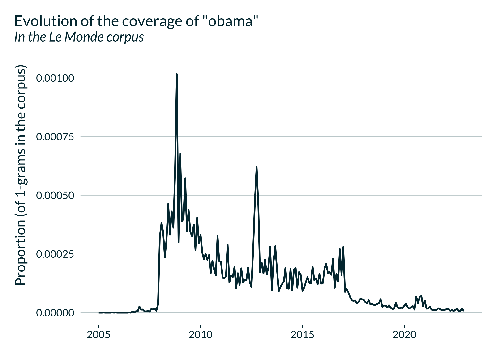

rallicagram calls the Gallicagram API directly from R. Gallicagram enables to build time series of keywords used in a set of French corpora:
Additional information can be found on a preprint by Gallicagram developers Benoît de Courson and Benjamin Azoulay and on the “Notice” tab of the Gallicagram website.
You can install the development version of rallicagram from GitHub with:
# install.packages("devtools")
devtools::install_github("vincentbagilet/rallicagram")The main function, gallicagram, builds a data frame with the yearly, monthly or daily proportion of mentions of a term in one of the three corpora between two specified dates.
library(rallicagram)
gallicagram(
keyword = "président",
corpus = "lemonde",
from = 1960,
to = 1970,
resolution = "monthly"
)
#> # A tibble: 132 × 9
#> date keyword nb_occur nb_grams prop_occur year month source resol…¹
#> <date> <chr> <int> <int> <dbl> <int> <int> <chr> <chr>
#> 1 1960-01-01 président 1338 872943 0.00153 1960 1 lemonde monthly
#> 2 1960-02-01 président 1360 915672 0.00149 1960 2 lemonde monthly
#> 3 1960-03-01 président 1461 928764 0.00157 1960 3 lemonde monthly
#> 4 1960-04-01 président 1239 772707 0.00160 1960 4 lemonde monthly
#> 5 1960-05-01 président 1355 835612 0.00162 1960 5 lemonde monthly
#> 6 1960-06-01 président 1314 850245 0.00155 1960 6 lemonde monthly
#> 7 1960-07-01 président 1189 942062 0.00126 1960 7 lemonde monthly
#> 8 1960-08-01 président 979 739018 0.00132 1960 8 lemonde monthly
#> 9 1960-09-01 président 1506 904804 0.00166 1960 9 lemonde monthly
#> 10 1960-10-01 président 1107 826661 0.00134 1960 10 lemonde monthly
#> # … with 122 more rows, and abbreviated variable name ¹resolutionIt enables to draw nice graphs representing the evolution of the use of a term in time.

Additional functions, to describe close co-occurrences or words associated with a ngram are also available in this package and described in the vignette.